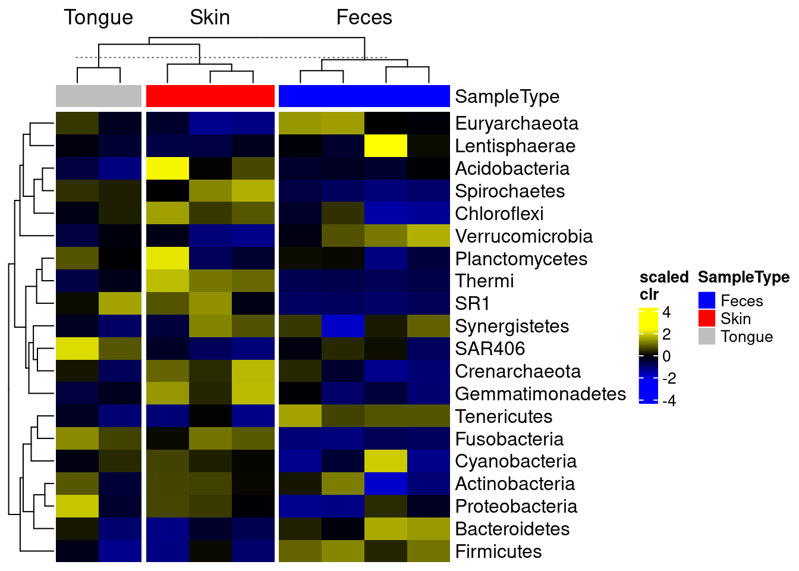

Data visualization will inevitably shape interpretation and motivate the next steps of the analysis. A variety of visualization methods are available for microbiome analysis but the application requires careful attention to details. Knowledge on the available tools and their limitations plays an important role in selecting the most suitable methods to address a given question.
This chapter introduces the reader to a number of visualization techniques found in this book, such as:
barplots
boxplots
heatmaps
ordination charts
regression charts
trees
The toolkit which provides the essential plotting functionality includes the following packages:
patchwork, cowplot, ggpubr and gridExtra: plot layout and multi-panel plotting
miaViz: specific visualization tools for TreeSummaizedExperiment objects
scater: specific visualization tools for SingleCellExperiment objects
SCE and TreeSE objects contain multiple layers of information in the form of rows, columns and meta data. The scater package supports in accessing, modifying and graphing the meta data related to features as well as samples.
Such meta data can be directly plotted with the functions plotRowData and plotColData.
# obtain QC datatse <-addPerCellQC(tse)tse <-addPerFeatureQC(tse)# plot QC Mean against SpeciesplotRowData(tse, "mean", "Species") +theme(axis.text.x =element_blank()) +labs(x ="Species", y ="QC Mean")
# plot QC Sum against Sample ID, colour-labeled by Sample TypeplotColData(tse, "sum", "X.SampleID", colour_by ="SampleType") +theme(axis.text.x =element_text(angle =45, hjust =1)) +labs(x ="Sample ID", y ="QC Sum")
Alternatively, they can be converted to a data.frame object and passed to ggplot.
# store colData into a data framecoldata <-as.data.frame(colData(tse))# plot Number of Samples against Sampling Siteggplot(coldata, aes(x = SampleType)) +geom_bar(width =0.5) +theme(axis.text.x =element_text(angle =45, hjust =1)) +labs(x ="Sampling Site",y ="Number of Samples")
Further methods of application can be found in the chapters @ref(qc) and @ref(richness) and in a few external tutorials with open data. Additionally, rowData and colData allow manipulation and subsetting of large data sets into smaller units, as explained in chapter @ref(datamanipulation).
15.1.2 Viewing abundance and prevalence patterns
Prior-to-analysis exploration may involve questions such as how microorganisms are distributed across samples (abundance) and what microorganisms are present in most of the samples (prevalence). The information on abundance and prevalence can be summarized into a jitter or density plot and a tree, respectively, with the miaViz package.
Specifically, the functions plotAbundance, plotAbundanceDensity and plotRowTree are used, and examples on their usage are discussed throughout chapter @ref(quality-control).
15.2 Diversity estimation
Alpha diversity is commonly measured as one of the diversity indices explained in chapter @ref(community-diversity). Because the focus lies on each sample separately, one-dimensional plots, such as scatter, violin and box plots, are suitable.
Beta diversity is generally evaluated as one of the dissimilarity indices reported in chapter @ref(community-similarity). Unlike alpha diversity, samples are compared collectively to estimate the heterogeneity across them, therefore multidimensional plots, such as Shepard and ordination plots are suitable.
alpha diversity
beta diversity
used metrics
diversity indices
dissimilarity indices
metric dimensionality
one-dimensional
multidimensional
suitable visualization
scatter, violin, box plots
Shepard, ordination plots
In conclusion, visualization techniques for alpha and beta diversity significantly differ from one another.
15.2.1 Alpha diversity with scatter, violin and box plots
The basic method to visualize the diversity values assigned to the different samples in a TSE object includes the following, where each data point represents one sample:
The several indices available for the evaluation of alpha diversity often return slightly divergent results, which can be visually compared with a multiple violin or box plot. For this purpose, plotColData (for violin plots) or ggplot (for box plots) are recursively applied to a number of diversity indices with the function lapply and the multi-panel plotting functionality of the patchwork package is then exploited.
# estimate faith diversity indextse <- mia::estimateFaith(tse,assay.type ="counts")# store colData into a data framecoldata <-as.data.frame(colData(tse))# generate plots for shannon and faith indices# and store them into a listplots <-lapply(c("shannon", "faith"),function(i) ggplot(coldata, aes_string(y = i)) +geom_boxplot() +theme(axis.text.x =element_blank(),axis.ticks.x =element_blank()))# combine plots with patchworkplots[[1]] + plots[[2]]
The analogous output in the form of a violin plot is obtained in chapter @ref(faith-diversity). In addition, box plots that group samples according to certain information, such as origin, sex, age and health condition, can be labeled with p-values for significant differences with the package ggsignif package, as shown in chapter @ref(estimate-diversity).
15.2.2 Beta diversity with Shepard and coordination plots
The scater package offers the general function plotReducedDim. In its basic form, it takes a TSE object and the results on sample similarity stored in the same object, which can be evaluated with the following coordination methods:
runMDS
runNMDS
runPCA
runTSNE
runUMAP
Since these clustering techniques allow for multiple coordinates or components, coordination plots can also span multiple dimensions, which is explained in chapter @ref(extras).
initial value 47.733208
iter 5 value 33.853364
iter 10 value 32.891200
final value 32.823570
converged
# plot results of a 2-component NMDS on tse,# coloured-scaled by shannon diversity indexplotReducedDim(tse, "NMDS", colour_by ="shannon")
Multiple combinations of coordinates or dimensions can also be integrated into a multi-panel arrangement.
# perform MDS coordination methodtse <-runMDS(tse,FUN = vegan::vegdist,method ="bray",name ="MDS",assay.type ="counts",ncomponents =3)# plot results of a 3-component MDS on tse,# coloured-scaled by faith diversity indexplotReducedDim(tse, "MDS", ncomponents =c(1:3), colour_by ="faith")
Similarly to iterating plotColData over indices of alpha diversity, lapply can be used in combination with patchwork to recursively apply plotReducedDim and visually compare results among various coordination methods.
# generate plots for MDS and NMDS methods# and store them into a listplots <-lapply(c("MDS", "NMDS"), plotReducedDim,object = tse,colour_by ="shannon")# combine plots with patchworkplots[[1]] + plots[[2]] +plot_layout(guides ="collect")
For similar examples, readers are referred to chapter @ref(community-similarity). Further material on the graphic capabilities of patchwork is available in its official package tutorial.
15.3 Statistical analysis
15.3.1 Heatmaps
As described in chapter @ref(visual-composition), bar plots and heatmaps can offer a useful insight into the composition of a community. Simple methods involve the functions plotAbundance and geom_tile in combination with scale_fill_gradientn from the packages miaViz and ggplot2, respectively.
For instance, below the composition of multiple samples (x axis) is reported in terms of relative abundances (y axis) for the top 10 taxa at the Order rank. Bar plots and heatmaps with analogous information at the Phylum level are available in the aforementioned chapter.
# agglomerate tse by Ordertse_order <-mergeFeaturesByRank(tse,rank ="Order",onRankOnly =TRUE)# transform counts into relative abundancetse_order <-transformAssay(tse_order,assay.type ="counts",method ="relabundance")# get top orderstop_taxa <-getTopFeatures(tse_order,top =10,assay.type ="relabundance")# leave only names for top 10 orders and label the rest with "Other"order_renamed <-lapply(rowData(tse_order)$Order,function(x){if (x %in% top_taxa) {x} else {"Other"}})rowData(tse_order)$Order <-as.character(order_renamed)# plot composition as a bar plotplotAbundance(tse_order,assay.type ="relabundance",rank ="Order",order_rank_by ="abund",order_sample_by ="Clostridiales")
To add a sample annotation, you can combine plots that you get from the output of plotAbundance.
# Create plotsplots <-plotAbundance(tse_order,assay.type ="relabundance",rank ="Order",order_rank_by ="abund",order_sample_by ="Clostridiales",features ="SampleType")# Modify the legend of the first plot to be smaller plots[[1]] <- plots[[1]] +theme(legend.key.size =unit(0.3, 'cm'),legend.text =element_text(size =6),legend.title =element_text(size =8))# Modify the legend of the second plot to be smaller plots[[2]] <- plots[[2]] +theme(legend.key.height =unit(0.3, 'cm'),legend.key.width =unit(0.3, 'cm'),legend.text =element_text(size =6),legend.title =element_text(size =8),legend.direction ="vertical")# Load required packageslibrary(ggpubr)library(patchwork) # Combine legendslegend <-wrap_plots(as_ggplot(get_legend(plots[[1]])), as_ggplot(get_legend(plots[[2]])), ncol =1) # Remove legends from the plotsplots[[1]] <- plots[[1]] +theme(legend.position ="none")plots[[2]] <- plots[[2]] +theme(legend.position ="none", axis.title.x=element_blank()) # Combine plotsplot <-wrap_plots(plots[[2]], plots[[1]], ncol =1, heights =c(2, 10))# Combine the plot with the legendwrap_plots(plot, legend, nrow =1, widths =c(2, 1))
For more sophisticated visualizations than those produced with plotAbundance and ggplot2, the packages pheatmap and sechm provide methods to include feature and sample clusters in a heatmap, along with further functionality.
# Agglomerate tse by phylumtse_phylum <-mergeFeaturesByRank(tse,rank ="Phylum",onRankOnly =TRUE)# Add clr-transformation on samplestse_phylum <-transformAssay(tse_phylum, MARGIN ="samples", method ="clr", assay.type ="counts", pseudocount=1)# Add z-transformation on features (taxa)tse_phylum <-transformAssay(tse_phylum, assay.type ="clr",MARGIN ="features", method ="z", name ="clr_z")# Take subset: only samples from feces, skin, or tonguetse_phylum_subset <- tse_phylum[ , tse_phylum$SampleType %in%c("Feces", "Skin", "Tongue") ]# Add clr-transformationtse_phylum_subset <-transformAssay(tse_phylum_subset, method ="clr",MARGIN="samples",assay.type ="counts", pseudocount=1)# Does z-transformationtse_phylum_subset <-transformAssay(tse_phylum_subset, assay.type ="clr",MARGIN ="features", method ="z", name ="clr_z")# Get n most abundant taxa, and subsets the data by themtop_taxa <-getTopFeatures(tse_phylum_subset, top =20)tse_phylum_subset <- tse_phylum_subset[top_taxa, ]# Gets the assay tablemat <-assay(tse_phylum_subset, "clr_z")# Creates the heatmappheatmap(mat)
We can cluster both samples and features hierarchically and add them to the x and y axes of the heatmap, respectively.
# Hierarchical clusteringtaxa_hclust <-hclust(dist(mat), method ="complete")# Creates a phylogenetic treetaxa_tree <-as.phylo(taxa_hclust)# Plot taxa treetaxa_tree <-ggtree(taxa_tree) +theme(plot.margin=margin(0,0,0,0)) # removes margins# Get order of taxa in plottaxa_ordered <-get_taxa_name(taxa_tree)# to view the tree, run# taxa_tree
Based on phylo tree, we decide to create three clusters.
# Creates clusterstaxa_clusters <-cutree(tree = taxa_hclust, k =3)# Converts into data frametaxa_clusters <-data.frame(clusters = taxa_clusters)taxa_clusters$clusters <-factor(taxa_clusters$clusters)# Order data so that it's same as in phylo treetaxa_clusters <- taxa_clusters[taxa_ordered, , drop =FALSE] # Prints taxa and their clusterstaxa_clusters
The information on the clusters is then added to the feature meta data.
# Adds information to rowDatarowData(tse_phylum_subset)$clusters <- taxa_clusters[order(match(rownames(taxa_clusters), rownames(tse_phylum_subset))), ]# Prints taxa and their clustersrowData(tse_phylum_subset)$clusters
Similarly, samples are hierarchically grouped into clusters, the most suitable number of clusters for the plot is selected and the new information is stored into the sample meta data.
# Hierarchical clusteringsample_hclust <-hclust(dist(t(mat)), method ="complete")# Creates a phylogenetic treesample_tree <-as.phylo(sample_hclust)# Plot sample treesample_tree <-ggtree(sample_tree) +layout_dendrogram() +theme(plot.margin=margin(0,0,0,0)) # removes margins# Get order of samples in plotsamples_ordered <-rev(get_taxa_name(sample_tree))# to view the tree, run# sample_tree# Creates clusterssample_clusters <-factor(cutree(tree = sample_hclust, k =3))# Converts into data framesample_data <-data.frame(clusters = sample_clusters)# Order data so that it's same as in phylo treesample_data <- sample_data[samples_ordered, , drop =FALSE] # Order data based on tse_phylum_subset <- tse_phylum_subset[ , rownames(sample_data)]# Add sample type datasample_data$sample_types <-unfactor(colData(tse_phylum_subset)$SampleType)sample_data
The package sechm allows for further visual capabilities and flexibility. In this case, the clustering step is automatically performed by the plotting function and does not need to be executed in advance.
# Stores annotation colros to metadatametadata(tse_phylum_subset)$anno_colors$SampleType <-c(Feces ="blue", Skin ="red", Tongue ="gray")# Create a plotsechm(tse_phylum_subset, features =rownames(tse_phylum_subset), assayName ="clr", do.scale =TRUE, top_annotation =c("SampleType"), gaps_at ="SampleType",cluster_cols =TRUE, cluster_rows =TRUE)

It is also possible to create an analogous heatmap by just using the ggplot2 package. However, a relatively long code is required to generate an identical output.
# Add feature names to column as a factortaxa_clusters$Feature <-rownames(taxa_clusters)taxa_clusters$Feature <-factor(taxa_clusters$Feature, levels = taxa_clusters$Feature)# Create annotation plotrow_annotation <-ggplot(taxa_clusters) +geom_tile(aes(x =NA, y = Feature, fill = clusters)) +coord_equal(ratio =1) +theme(axis.text.x=element_blank(),axis.text.y=element_blank(),axis.ticks.y=element_blank(),axis.title.y=element_blank(),axis.title.x =element_text(angle =90, vjust =0.5, hjust=1),plot.margin=margin(0,0,0,0), ) +labs(fill ="Clusters", x ="Clusters")# to view the notation, run# row_annotation# Add sample names to one of the columnssample_data$sample <-factor(rownames(sample_data), levels =rownames(sample_data))# Create annotation plotsample_types_annotation <-ggplot(sample_data) +scale_y_discrete(position ="right", expand =c(0,0)) +geom_tile(aes(y =NA, x = sample, fill = sample_types)) +coord_equal(ratio =1) +theme(axis.text.x=element_blank(),axis.text.y=element_blank(),axis.title.x=element_blank(),axis.ticks.x=element_blank(),plot.margin=margin(0,0,0,0),axis.title.y.right =element_text(angle=0, vjust =0.5) ) +labs(fill ="Sample types", y ="Sample types")# to view the notation, run# sample_types_annotation# Create annotation plotsample_clusters_annotation <-ggplot(sample_data) +scale_y_discrete(position ="right", expand =c(0,0)) +geom_tile(aes(y =NA, x = sample, fill = clusters)) +coord_equal(ratio =1) +theme(axis.text.x=element_blank(),axis.text.y=element_blank(),axis.title.x=element_blank(),axis.ticks.x=element_blank(),plot.margin=margin(0,0,0,0),axis.title.y.right =element_text(angle=0, vjust =0.5) ) +labs(fill ="Clusters", y ="Clusters")# to view the notation, run# sample_clusters_annotation# Order data based on clusters and sample typesmat <- mat[unfactor(taxa_clusters$Feature), unfactor(sample_data$sample)]# ggplot requires data in melted formatmelted_mat <-melt(mat)colnames(melted_mat) <-c("Taxa", "Sample", "clr_z")# Determines the scaling of colorssmaxval <-round(max(abs(melted_mat$clr_z)))limits <-c(-maxval, maxval)breaks <-seq(from =min(limits), to =max(limits), by =0.5)colours <-c("darkblue", "blue", "white", "red", "darkred")heatmap <-ggplot(melted_mat) +geom_tile(aes(x = Sample, y = Taxa, fill = clr_z)) +theme(axis.title.y=element_blank(),axis.title.x=element_blank(),axis.ticks.y=element_blank(),axis.text.x =element_text(angle =90, vjust =0.5, hjust=1),plot.margin=margin(0,0,0,0), # removes marginslegend.key.height=unit(1, 'cm') ) +scale_fill_gradientn(name ="CLR + Z transform", breaks = breaks, limits = limits, colours = colours) +scale_y_discrete(position ="right")heatmap
library(patchwork)# Create layoutdesign <-c( patchwork::area(3, 1, 4, 1), patchwork::area(1, 2, 1, 3), patchwork::area(2, 2, 2, 3), patchwork::area(3, 2, 4, 3))# to view the design, run# plot(design)# Combine plotsplot <- row_annotation + sample_clusters_annotation + sample_types_annotation + heatmap +plot_layout(design = design, guides ="collect",# Specify layout, collect legends# Adjust widths and heights to align plots.# When annotation plot is larger, it might not fit into# its column/row.# Then you need to make column/row larger.# Relative widths and heights of each column and row:# Currently, the width of the first column is 15 % and the height of# first two rows are 30 % the size of others# To get this work most of the times, you can adjust all sizes to be 1, i.e. equal, # but then the gaps between plots are larger.widths =c(0.15, 1, 1),heights =c(0.3, 0.3, 1, 1))# plot
Heatmaps find several other applications in biclustering and multi-assay analyses. These are discussed further in chapters @ref(clustering) and @ref(multi-assay-analyses).